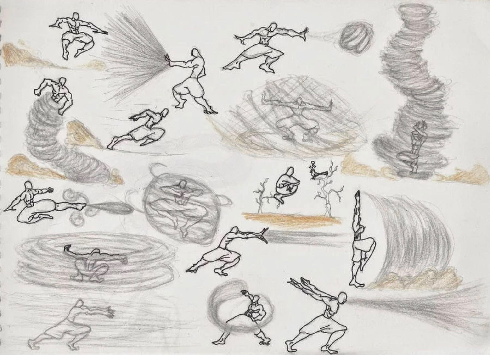
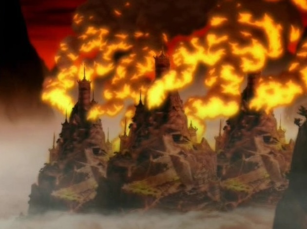
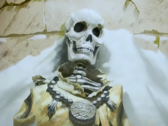

Air Nomads is a general term used to define the monastic order of men and women who
practice the discipline of airbending and their seclusive, theocratic society.
Air Nomads are nomadic by definition but had four air temples located at each corner
of the globe. These temples were hidden atop mountain ranges and under cliffs. They
were located in the Northern Earth Kingdom and on three remote islands. Every Air Nomad
was a bender which is unheard of in other nations. This was because of their high level
of spirituality. Air Nomads travel around the world riding on flying bison. Not only
were they the most spiritual culture Air Nomads also lived in harmony with nature.
Air Nomads were also known for their fun-loving nature and had a great sense of humor.
The Air Nomads had the smallest nation and a small economy which depended almost entirely
on limited agriculture.
Culture
The Air Nomads detached themselves from worldly problems and concerns.
They believe that finding peace and freedom was the key to solving their
difficulties in life. Airbenders continually sought spiritual enlightenment,
and, as a result, all children born into the Air Nomads were benders.
The first airbenders learned their art from the flying bison. Their detachment
from the world and peaceful nature made it difficult to fight the Fire nation
and resulted in their defeat.
Techniques

Airbending is done through the aerokinetic ability to control and manipulate air.
Air is considered the element of freedom. An important aspect of airbending is flexibility
and finding and following the path of least resistance. Airbending is famous for being
almost entirely defensive and as the most dynamic of the four bending arts.
Airbenders can overpower many enemies at one time by using large and powerful attacks that
could be deadly; however, due to the peaceful personality of the Air Nomads, these type of attacks
are rarely used.
Air Nomad Genocide

Summary
The Air Nomad Genocide was a mass slaughter committed by the Fire Nation under Fire Lord
Sozin that nearly wiped out the Air Nomads and the fauna that lived in the
air temples. Avatar Aang was the only human survivor of this ferocious attack. He was
Fire Lord Sozin's main target. There was severe backlash from the Earth Kingdom and Water
Tribes after this cultural destruction. They declared war on the Fire Nation and thus the
Hundred Year War begun.
Preluding Events
Fire Lord Sozin betrayed his childhood friend Avatar Roku and left him for dead after a
one-on-one battle. Sozin knew that Avatar Roku's successor would be an Air Nomad so he
decided in order to end the Avatar Cycle he would have to wipe out the Air Nomads.
The surpise attack was timed to take place during the arrival of the Great Comet, later
dubbed Sozin's Comet, as it gave his firebenders tremendous power advantage over the Air Nomads.
Because of fear about an impending war, Aang was told by the Council of Elders that he was the
Avatar at the age of twelve instead of the traditional age of sixteen. His guardian, Gyatso,
wanted Aang to have a normal, carefree childhood and continued to play games and have fun with Aang.
As a result, the rest of the Council of Elders and Pasang decided that it was necessary to separate
Aang and Gyatso. They were going to send Aang to the Eastern Air Temple to complete his airbending
training. Aang overheard this conversation, became overwhelmed with his new identity and responsibility
so he ran away.
Genocide
Aang told Katara and Sokka the only way to get to an Air Nomad temple was by flying bison. He initally did
not believe his people were actually dead because it would have been impossible for the Fire Nation to reach
them. However, the Fire Nation found a way to reach the Air Nomad temples and commit the genocide. Some temples,
like the Eastern Air Temple, suffered more damage than others while the Western Air Temple was nearly intact.
Although the Air Nomads followed a pacifistic culture, they fought against the Fire Nation with a fair amount
of success. The proof of this is the dozens of firebender bodies surrounding the remain of Monk Gyatso.
Unfortunately, they were still no match against the massive numbers and firepower of the Fire Naton army.
A tiny number of Air Nomads escaped the temple attacks and were difficult to track down. Fire Lord Sozin changed
tactics and drew them out by using relics taken from temples and placed them in small homes high in the mountains.
This gave these residences the appearance of Air Nomad refugees living in them. Then the Fire Nation used spies
to spread rumors about the safe houses throughout the Earth Kingdom. Unfortunately, the remaining Air Nomad
refugees fell for this trap and were captured and killed.
Aftermath

Gyatso's corpse discovered by Aang
As previously mentioned, Aang was the only known airbender to survive the genocide.
He was racked with guilt for running away while his people fought the Fire Nation
and died. Aang believed that if he had stayed he could have saved his people from
the genocide. Meanwhile, Fire Lord Sozin spent the last two decades of his life searching
for Aang who was encased in an iceberg underwater.